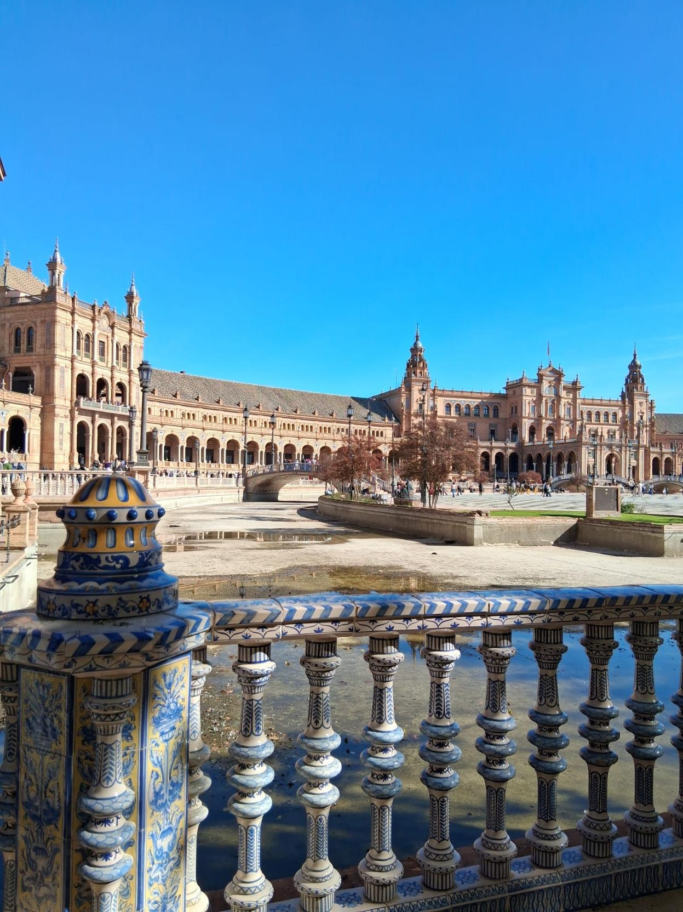

Cultural Information – Spain & Lebrija
Understanding Spanish culture will help you settle in quickly, behave respectfully, and make the most of your work placement experience.
🇪🇸 Spain – Overview
- Capital city: Madrid
- Official language: Spanish (Castilian)
- Currency: Euro (€)
- Climate: Hot summers, mild winters
📍 Lebrija – Local Area
Lebrija is a traditional Spanish town in southern Spain. Life is relaxed, community-focused, and strongly influenced by local customs.
- Shops may close during the afternoon (siesta)
- Sundays are generally quiet
- People value politeness and respect
🤝 Customs & Behaviour
- Greet people politely when entering shops or workplaces
- Punctuality at work is expected
- Dress modestly when in public spaces
- Respect local traditions and ways of life
⚖️ Important Laws & Rules
- Drinking alcohol is only permitted for those aged 18+
- Street drinking is not allowed
- Public nudity is illegal
- Failure to follow local laws may result in police involvement
🗣️ Basic Spanish Phrases
- Hola – Hello
- Por favor – Please
- Gracias – Thank you
- Buenos días – Good morning
- ¿Hablas inglés? – Do you speak English?
✋ Body Language & Gestures
Hand gestures are commonly used in Spain. Be aware that gestures may have different meanings than in the UK. If unsure, keep gestures minimal.